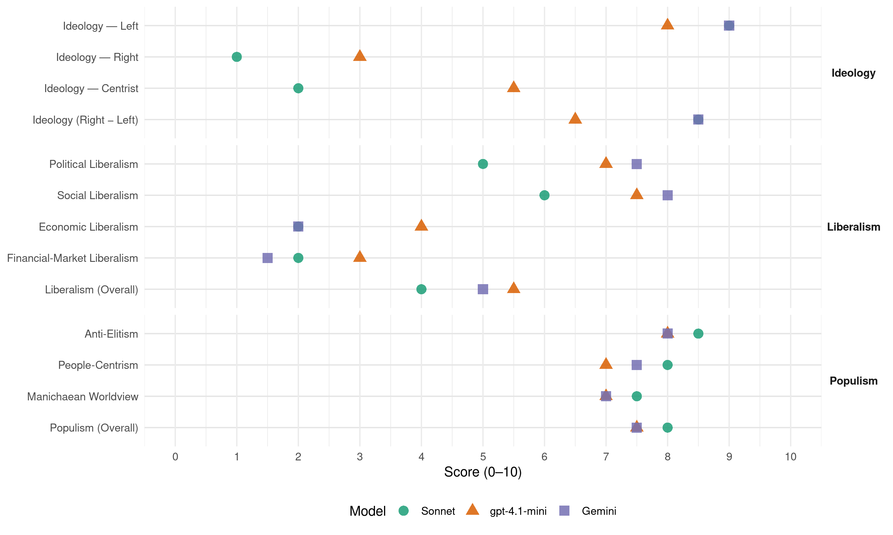

PT (Mexico, 2012)
manifesto_id 171306_201207
Get full text: This site shows derived annotations and short verbatim quotes only. The full manifesto text is © Manifesto Project / WZB — obtain it via manifesto-project.wzb.eu using the manifesto_id above.
Headline scores
| Dimension | Sonnet | gpt-4.1-mini | Gemini |
|---|---|---|---|
| Populism (Overall) | 8.0 | 7.5 | 7.5 |
| Anti-Elitism | 8.5 | 8.0 | 8.0 |
| People-Centrism | 8.0 | 7.0 | 7.5 |
| Manichaean Worldview | 7.5 | 7.0 | 7.0 |
| Ideology (Right − Left) | 8.5 | 6.5 | 8.5 |
| Liberalism (Overall) | 4.0 | 5.5 | 5.0 |
| Political Liberalism | 5.0 | 7.0 | 7.5 |
| Social Liberalism | 6.0 | 7.5 | 8.0 |
| Economic Liberalism | 2.0 | 4.0 | 2.0 |
| Financial-Market Liberalism | 2.0 | 3.0 | 1.5 |
Evidence per dimension
Economic Liberalism
Gemini · score 2.0 · verified · chunk 1
“rotundo no a la privatización del petróleo y al sector eléctrico”
nuestra soberanía nacional. Manifestamos un rotundo no a la privatización del petróleo y al sector eléctrico, y seguiremos luchando para evitar que intereses
Gemini · score 2.0 · verified · chunk 2
“establecer barreras arancelarias para proteger”
participación comunitaria. Establecer barreras arancelarias para proteger a los productores nacionales de la desleal competencia
gpt-4.1-mini · score 4.0 · verified · chunk 1
“la apertura comercial indiscriminada”
…El proceso de apertura comercial indiscriminada instrumentado desde mediados de los años ochenta y que adquirió carácter de Ley con el TLCAN el 1 de enero de 1994, complementado con la firma de más tratados comerciales con alrededor de 32 países, convirtiéndonos en el país con más tratados comerciales, nos ha colocado en una clara desventaja competitiva frente las importaciones.
gpt-4.1-mini · score 4.0 · verified · chunk 2
“establecer barreras arancelarias para proteger a los productores nacionales de la desleal competencia extranjera”
…establecer barreras arancelarias para proteger a los productores nacionales de la desleal competencia extranjera. Establecer programas eficientes de recuperación y cuidado del medio ambiente y los recursos naturales explotables…
Sonnet · score 2.0 · verified · chunk 1
“No se puede dejar la economía a las fuerzas del libre mercado”
No se puede dejar la economía a las fuerzas del libre mercado. No se puede seguir dependiendo del contexto internacional ni de los mercados de capitales.
Sonnet · score 2.0 · verified · chunk 2
“Establecer barreras arancelarias para proteger a los productores”
Establecer barreras arancelarias para proteger a los productores nacionales de la desleal competencia extranjera
Financial-Market Liberalism
Gemini · score 1.0 · verified · chunk 1
“banca, sector estratégico por excelencia, debe ser regulada y supervisada”
en el contexto de un mayor crecimiento económico. Asimismo, la banca, sector estratégico por excelencia, debe ser regulada y supervisada por el Estado para que desempeñe su papel
Gemini · score 2.0 · verified · chunk 2
“canalizar créditos con tasas preferenciales”
soberanía alimentaria. Canalizar créditos con tasas preferenciales a los ejidatarios y medianos y pequeños productores
gpt-4.1-mini · score 3.0 · verified · chunk 1
“la banca extranjera no monopolice el sistema”
…El gobierno debe impulsar no sólo la banca de desarrollo, sino también debe tener banca comercial para que la banca extranjera no monopolice el sistema de pagos en el país, pues ello le da un control absoluto sobre la política crediticia y sobre los rumbos de la vida económica nacional.
Sonnet · score 2.0 · verified · chunk 1
“capital financiero especulativo estalló”
Este modelo, hegemonizado por el capital financiero especulativo estalló en el centro del capitalismo mundial, Estados Unidos, y de igual forma en la Unión Europea
Sonnet · score 2.0 · verified · chunk 2
“Canalizar créditos con tasas preferenciales a los ejidatarios”
Canalizar créditos con tasas preferenciales a los ejidatarios y medianos y pequeños productores, a través de instituciones financieras creadas para tal fin
Political Liberalism
Gemini · score 8.0 · verified · chunk 1
“consolide el espíritu republicano y la división de poderes”
reforma plural incluyente que abra más espacios a la participación ciudadana; que consolide el espíritu republicano y la división de poderes; que dé cauce a la búsqueda de una sociedad
Gemini · score 7.0 · verified · chunk 2
“democratización de la vida rural”
sustentada en los siguientes principios: Democratización de la vida rural, desterrando el caciquismo, la corrupción
gpt-4.1-mini · score 7.0 · verified · chunk 1
“la división de poderes”
…que se respete la palabra, los acuerdos y los compromisos empeñados, que el ejercicio del poder público como resultado de un proceso político electoral de coalición incluya la coparticipación y corresponsabilidad entre las fuerzas políticas aliadas, entre gobernantes y gobernados, entre los distintos actores políticos y sociales y se elimine el presidencialismo autoritario. Para ello procuraremos limitar los poderes presidenciales, descentralizar sus funciones y someter su actuación al control de los otros poderes, de la opinión pública y de la participación popular.
gpt-4.1-mini · score 7.0 · verified · chunk 2
“la educación universal, entendiendo por éste, el derecho que tiene todo ciudadano a estudiar y concluir sus estudios”
…se incorpore también el derecho a la educación universal, entendiendo por éste, el derecho que tiene todo ciudadano a estudiar y concluir sus estudios sin pretexto de que no hay espacios en las escuelas públicas o que por razones económicas tenga que abandonar los mismos…
Sonnet · score 5.0 · verified · chunk 1
“democracia participativa efectiva”
lucharemos para rescatar el papel promotor del Estado en el crecimiento económico, en el desarrollo con equidad social y en la construcción de una democracia participativa efectiva
Sonnet · score 5.0 · verified · chunk 2
“Democratización de la vida rural, desterrando el caciquismo”
Democratización de la vida rural, desterrando el caciquismo, la corrupción y la apropiación ilegal del poder político
Liberalism (Overall)
Gemini · score 5.0 · verified · chunk 1
“consolide el espíritu republicano y la división de poderes”
reforma plural incluyente que abra más espacios a la participación ciudadana; que consolide el espíritu republicano y la división de poderes; que dé cauce a la búsqueda de una sociedad
Gemini · score 5.0 · verified · chunk 2
“sancionar toda discriminación sexual”
maternidad libre y voluntaria, acompañándolas de programas de educación sexual, paternidad responsable y métodos anticonceptivos. c) Sancionar toda discriminación sexual, garantizando igualdad de condiciones
gpt-4.1-mini · score 5.0 · verified · chunk 1
“la división de poderes”
…que se respete la palabra, los acuerdos y los compromisos empeñados, que el ejercicio del poder público como resultado de un proceso político electoral de coalición incluya la coparticipación y corresponsabilidad entre las fuerzas políticas aliadas, entre gobernantes y gobernados, entre los distintos actores políticos y sociales y se elimine el presidencialismo autoritario. Para ello procuraremos limitar los poderes presidenciales, descentralizar sus funciones y someter su actuación al control de los otros poderes, de la opinión pública y de la participación popular.
gpt-4.1-mini · score 6.0 · verified · chunk 2
“se incorpore también el derecho a la educación universal, entendiendo por éste, el derecho que tiene todo ciudadano a estudiar y concluir sus estudios”
…se incorpore también el derecho a la educación universal, entendiendo por éste, el derecho que tiene todo ciudadano a estudiar y concluir sus estudios sin pretexto de que no hay espacios en las escuelas públicas o que por razones económicas tenga que abandonar los mismos…
Sonnet · score 4.0 · mixed · chunk 1
“reforma democrática del Estado”
Contribuiremos a continuar y profundizar la reforma democrática del Estado en los temas que están pendientes: equilibrio y autonomía entre los Poderes del Estado
Sonnet · score 4.0 · verified · chunk 2
“el control del capital especulativo es una necesidad urgente”
la regulación estatal, pero sobre todo el control del capital especulativo es una necesidad urgente
Anti-Elitism
Gemini · score 8.0 · verified · chunk 1
“contubernio que existe entre el poder económico y el poder político”
ni privilegiar la especulación el dinero fácil a la sombra del contubernio que existe entre el poder económico y el poder político. En la calle siguen los grandes criminales de cuello blanco.
Gemini · score 8.0 · verified · chunk 2
“el modelo neoliberal del grupo gobernante”
viven en la extrema pobreza. El modelo neoliberal del grupo gobernante no sólo sigue profundizando estos problemas, sino que
gpt-4.1-mini · score 8.0 · verified · chunk 1
“la concentración del ingreso a su favor”
…políticas económicas que sólo van dirigidas a fortalecer al bloque hegemónico que conduce los destinos de esos países a través de impulsar la concentración del ingreso a su favor. Este último aspecto es lo que hemos podido observar en las naciones en vías de desarrollo y en particular en México, como resultado de la aplicación de las políticas neoliberales desde hace más de dos décadas y que han dado como resultado el empobrecimiento de millones de habitantes en nuestro continente y en contrapartida han creado un reducido grupo de magnates que lo tienen todo.
gpt-4.1-mini · score 8.0 · verified · chunk 2
“la única forma de resolver la crisis del sector radica en la adopción de una nueva vía de desarrollo”
…la crisis del sector radica en la adopción de una nueva vía de desarrollo para el campo mexicano, sustentada en los siguientes principios: Democratización de la vida rural, desterrando el caciquismo, la corrupción y la apropiación ilegal del poder político…
Sonnet · score 9.0 · verified · chunk 1
“privilegiar a los grandes monopolios y oligopolios”
busca el equilibrio macroeconómico mediante la estabilidad de precios y del tipo de cambio, para privilegiar a los grandes monopolios y oligopolios nacionales e internacionales, ignorando sus efectos sobre el empleo
Sonnet · score 8.0 · verified · chunk 2
“han creado un reducido grupo de magnates que lo tienen todo”
el empobrecimiento de millones de habitantes en nuestro continente y en contrapartida han creado un reducido grupo de magnates que lo tienen todo
Ideology — Centrist
gpt-4.1-mini · score 5.0 · verified · chunk 1
“la participación ciudadana”
…la participación ciudadana y de organizaciones sociales en el control y supervisión de las actividades de las instituciones públicas y de las grandes empresas y sectores estratégicos, sean públicos o privados, con el fin de combatir la corrupción, garantizar la transparencia de sus acciones y funciones, y asegurar el cumplimiento de los objetivos nacionales. Sin democracia en todos los niveles y en la toma de decisiones fundamentales, no se podrá revertir el status quo reinante y atender las necesidades de las grandes mayorías del país.
gpt-4.1-mini · score 6.0 · verified · chunk 2
“Democratización de la vida rural, desterrando el caciquismo, la corrupción y la apropiación ilegal del poder político”
…la crisis del sector radica en la adopción de una nueva vía de desarrollo para el campo mexicano, sustentada en los siguientes principios: Democratización de la vida rural, desterrando el caciquismo, la corrupción y la apropiación ilegal del poder político y del excedente económico…
Sonnet · score 2.0 · verified · chunk 1
“mayoría de izquierda y centro-izquierda”
si construimos una mayoría de izquierda y centro-izquierda en la Cámara de Diputados, y en la Cámara de Senadores, para que sea un contrapeso eficaz al continuismo neoliberal
Sonnet · score 2.0 · verified · chunk 2
“Acuerdo Nacional para lograr una Reforma Agraria Social”
Establecer un Acuerdo Nacional para lograr una Reforma Agraria Social Productiva que tenga como directriz la soberanía alimentaria
Ideology — Left
Gemini · score 9.0 · verified · chunk 1
“política de redistribución del ingreso a través de una reforma hacendaria”
como es la política económica neoliberal, así como la implementación de una política de redistribución del ingreso a través de una reforma hacendaria integral que cobre impuestos a los que más tienen.
Gemini · score 9.0 · verified · chunk 2
“propiedad privada de los medios de producción”
Las causas de la pobreza se remontan a la existencia de la propiedad privada de los medios de producción en cualquier sociedad.
gpt-4.1-mini · score 8.0 · verified · chunk 1
“redistribución del ingreso”
…La redistribución del ingreso que impulsa el Partido del Trabajo apunta no sólo a la erradicación de las mayores desigualdades heredadas, sino a una nueva manera de distribuir los frutos de la modernización económica, de manera que aliente el trabajo productivo, establezca relaciones sociales más equilibradas y genere ciudadanos libres. Para lograr este objetivo el Partido del Trabajo se esforzará por aumentar la participación de la población de menores ingresos y reducir la de la población más rica dentro de la renta nacional, mediante la formulación de políticas públicas que alienten la modernización incluyente y la reactivación de la economía; políticas de recuperación salarial directa y por productividad; políticas crediticias preferenciales y de fomento a la micro, pequeña y mediana empresa, así como políticas que graven más a los que más tienen y exenten a los trabajadores de bajos ingresos.
gpt-4.1-mini · score 8.0 · verified · chunk 2
“la implementación de una política de redistribución del ingreso a través de una reforma hacendaria integral”
…desterrarla. Nuestra propuesta en este sentido ha estado enfocada siempre a que los recursos públicos que se destinen a estos programas sean, en lo fundamental, para proyectos productivos que tengan un impacto directo en la generación de ingresos propios para los más pobres de México…
Sonnet · score 9.0 · verified · chunk 1
“redistribución equitativa del ingreso”
La modernización y democratización de México debe sustentarse en una redistribución equitativa del ingreso. La eliminación de la pobreza y de los rezagos sociales
Sonnet · score 9.0 · verified · chunk 2
“reforma hacendaria integral que cobre impuestos a los que más tienen”
implementación de una política de redistribución del ingreso a través de una reforma hacendaria integral que cobre impuestos a los que más tienen
Ideology (Right − Left)
Gemini · score 8.0 · verified · chunk 1
“política de redistribución del ingreso a través de una reforma hacendaria”
como es la política económica neoliberal, así como la implementación de una política de redistribución del ingreso a través de una reforma hacendaria integral que cobre impuestos a los que más tienen.
Gemini · score 9.0 · verified · chunk 2
“propiedad privada de los medios de producción”
Las causas de la pobreza se remontan a la existencia de la propiedad privada de los medios de producción en cualquier sociedad.
gpt-4.1-mini · score 6.0 · verified · chunk 1
“la concentración del ingreso a su favor”
…políticas económicas que sólo van dirigidas a fortalecer al bloque hegemónico que conduce los destinos de esos países a través de impulsar la concentración del ingreso a su favor. Este último aspecto es lo que hemos podido observar en las naciones en vías de desarrollo y en particular en México, como resultado de la aplicación de las políticas neoliberales desde hace más de dos décadas y que han dado como resultado el empobrecimiento de millones de habitantes en nuestro continente y en contrapartida han creado un reducido grupo de magnates que lo tienen todo.
gpt-4.1-mini · score 7.0 · verified · chunk 2
“la única forma de resolver la crisis del sector radica en la adopción de una nueva vía de desarrollo”
…la crisis del sector radica en la adopción de una nueva vía de desarrollo para el campo mexicano, sustentada en los siguientes principios: Democratización de la vida rural, desterrando el caciquismo, la corrupción y la apropiación ilegal del poder político…
Sonnet · score 9.0 · verified · chunk 1
“política económica neoliberal imperante”
son resultado de las contradicciones emanadas de la política económica neoliberal imperante. El predominio de políticas contraccionistas
Sonnet · score 8.0 · verified · chunk 2
“políticas neoliberales de las últimas dos décadas”
repercusiones de nuestra inserción a la globalización en el marco de las políticas neoliberales de las últimas dos décadas
Ideology — Right
gpt-4.1-mini · score 3.0 · verified · chunk 1
“la “guerra contra el crimen organizado y el narcotráfico””
…La “guerra contra el crimen organizado y el narcotráfico”, con más de 50 mil muertos y 10 mil desaparecidos en los casi 5 años de la actual administración, ha sido un fracaso rotundo, y se subrayó hacia finales del año pasado que no se cambiará la estrategia. La procuración y administración de justicia se ha venido utilizando con fines políticos y electorales.
gpt-4.1-mini · score 3.0 · verified · chunk 2
“establecer barreras arancelarias para proteger a los productores nacionales de la desleal competencia extranjera”
…establecer barreras arancelarias para proteger a los productores nacionales de la desleal competencia extranjera. Establecer programas eficientes de recuperación y cuidado del medio ambiente y los recursos naturales explotables…
Sonnet · score 1.0 · verified · chunk 1
“soberanía nacional”
Manifestamos un rotundo no a la privatización del petróleo y al sector eléctrico, y seguiremos luchando para evitar que intereses oligárquicos terminen de apoderarse de estos dos sectores que deben constituir dos de las principales palancas para el desarrollo de México. Los mexicanos tenemos experiencias muy negativas de las privatizaciones… amenaza el desarrollo del país y nuestra soberanía nacional
Sonnet · score 1.0 · verified · chunk 2
“capital nacional mantenga su hegemonía frente al capital extranjero”
cuidando que el capital nacional mantenga su hegemonía frente al capital extranjero, porque las telecomunicaciones son un área de vital importancia
Manichaean Worldview
Gemini · score 7.0 · verified · chunk 1
“criminales de cuello blanco”
el poder económico y el poder político. En la calle siguen los grandes criminales de cuello blanco. En el ámbito político el balance tampoco resulta favorable.
Gemini · score 7.0 · verified · chunk 2
“reducido grupo de magnates que lo tienen todo”
empobrecimiento de millones de habitantes en nuestro continente y en contrapartida han creado un reducido grupo de magnates que lo tienen todo.
gpt-4.1-mini · score 6.0 · verified · chunk 1
“la “guerra contra el crimen organizado y el narcotráfico””
…La “guerra contra el crimen organizado y el narcotráfico”, con más de 50 mil muertos y 10 mil desaparecidos en los casi 5 años de la actual administración, ha sido un fracaso rotundo, y se subrayó hacia finales del año pasado que no se cambiará la estrategia. La procuración y administración de justicia se ha venido utilizando con fines políticos y electorales. Se ha venido imponiendo la judialización de la política.
gpt-4.1-mini · score 8.0 · verified · chunk 2
“la corrupción de los cuerpos policíacos; y establecer leyes estrictas que impidan el acoso sexual”
…terminar con la violencia hacia las mujeres en todas su manifestaciones y en todos los ámbitos de la vida social; garantizar su seguridad pública, incluidas todas aquellas mujeres que son víctimas cotidianas de la corrupción de los cuerpos policíacos; y establecer leyes estrictas que impidan el acoso sexual en los centros de trabajo…
Sonnet · score 8.0 · verified · chunk 1
“socializar las pérdidas y privatizar las ganancias”
La sociedad está harta, ya basta de socializar las pérdidas y privatizar las ganancias. Los programas de combate a la pobreza en nuestro país están orientados a fines puramente asistencialistas
Sonnet · score 7.0 · verified · chunk 2
“socializar las pérdidas y privatizar las ganancias”
La sociedad está harta, ya basta de socializar las pérdidas y privatizar las ganancias
People-Centrism
Gemini · score 7.0 · verified · chunk 1
“representación efectiva de los intereses del pueblo de México”
en la acción legislativa y la representación efectiva de los intereses del pueblo de México. Para evitar que se creen camarillas y mafias al
Gemini · score 8.0 · verified · chunk 2
“causa de los trabajadores y de los pobres”
Por esa razón, el Partido del Trabajo se ha comprometido con la causa de los trabajadores y de los pobres de nuestra nación.
gpt-4.1-mini · score 7.0 · verified · chunk 1
“la gran mayoría de la población”
…que privilegia condiciones de confianza y rentabilidad en favor del capital financiero internacional y que descuida y desatiende las demandas nacionales de los productores del sector industrial y agrícola, así como las demandas de empleo, salarios remunerados y de bienestar social. Menos aún ahora que nos encontramos en plena crisis económica mundial. No se puede dejar la economía a las fuerzas del libre mercado. No se puede seguir dependiendo del contexto internacional ni de los mercados de capitales. No se puede seguir con políticas que están profundizando los rezagos productivos y los problemas del subdesarrollo, que nos llevan a seguir postergando las bases materiales para el crecimiento sostenido. No se puede seguir vendiendo el país para promover la entrada de capitales y así financiar los desequilibrios externos y alcanzar baja inflación y cierto crecimiento económico. No podemos seguir renunciado a la construcción de un Nuevo Proyecto de Nación y a la aplicación de políticas monetaria, crediticia, fiscal, comercial y cambiaria indispensables para reactivar la economía, incrementar el empleo productivo bien remunerado, erradicar la pobreza y las grandes desigualdades productivas, sectoriales, regionales y de ingreso. El Partido del Trabajo se compromete a impulsar una política económica orientada a: Redefinir el Proyecto Económico Nacional. El país demanda una estrategia de desarrollo sostenido que no sea propenso a la vulnerabilidad externa, que no dependa de la entrada creciente de capitales y que no comprometa la soberanía del país. Nos pronunciamos por un desarrollo económico autosustentable que no atente contra los recursos no renovables y la biodiversidad, que garantice la sustentabilidad ambiental. Nuestra propuesta implica dejar de favorecer aquellos sectores nacionales y extranjeros que han lucrado y se han enriquecido a costa de la descapitalización de la esfera productiva y del deterioro del nivel de vida de la mayoría de la población.
gpt-4.1-mini · score 7.0 · verified · chunk 2
“la sociedad está harta, ya basta de socializar las pérdidas y privatizar las ganancias”
…la sociedad está harta, ya basta de socializar las pérdidas y privatizar las ganancias. Los programas de combate a la pobreza en nuestro país están orientados a fines puramente asistencialistas y en muchas ocasiones electoreros…
Sonnet · score 8.0 · verified · chunk 1
“las grandes mayorías de este país”
nos comprometemos a trabajar constantemente en beneficio de las grandes mayorías de este país. V. PROBLEMÁTICA DEL CAMPO
Sonnet · score 8.0 · verified · chunk 2
“la causa de los trabajadores y de los pobres”
el Partido del Trabajo se ha comprometido con la causa de los trabajadores y de los pobres de nuestra nación
Populism (Overall)
Gemini · score 7.0 · verified · chunk 1
“contubernio que existe entre el poder económico y el poder político”
ni privilegiar la especulación el dinero fácil a la sombra del contubernio que existe entre el poder económico y el poder político. En la calle siguen los grandes criminales de cuello blanco.
Gemini · score 8.0 · verified · chunk 2
“reducido grupo de magnates que lo tienen todo”
empobrecimiento de millones de habitantes en nuestro continente y en contrapartida han creado un reducido grupo de magnates que lo tienen todo.
gpt-4.1-mini · score 7.0 · verified · chunk 1
“la concentración del ingreso a su favor”
…políticas económicas que sólo van dirigidas a fortalecer al bloque hegemónico que conduce los destinos de esos países a través de impulsar la concentración del ingreso a su favor. Este último aspecto es lo que hemos podido observar en las naciones en vías de desarrollo y en particular en México, como resultado de la aplicación de las políticas neoliberales desde hace más de dos décadas y que han dado como resultado el empobrecimiento de millones de habitantes en nuestro continente y en contrapartida han creado un reducido grupo de magnates que lo tienen todo.
gpt-4.1-mini · score 8.0 · verified · chunk 2
“la única forma de resolver la crisis del sector radica en la adopción de una nueva vía de desarrollo”
…la crisis del sector radica en la adopción de una nueva vía de desarrollo para el campo mexicano, sustentada en los siguientes principios: Democratización de la vida rural, desterrando el caciquismo, la corrupción y la apropiación ilegal del poder político…
Sonnet · score 8.0 · verified · chunk 1
“intereses nacionales a los del gran capital”
sustentados en grandes acuerdos y consensos nacionales que antepongan los intereses nacionales a los del gran capital
Sonnet · score 8.0 · verified · chunk 2
“desterrando la base de la producción de la pobreza”
dando un cambio radical al modelo económico vigente, desterrando la base de la producción de la pobreza como es la política económica neoliberal
Social Liberalism